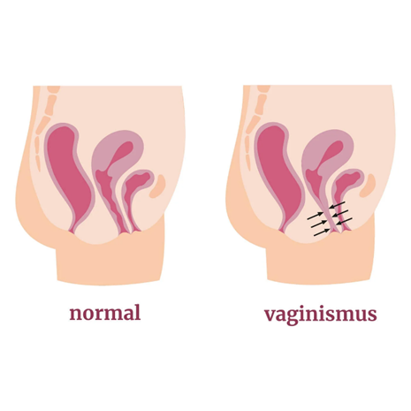
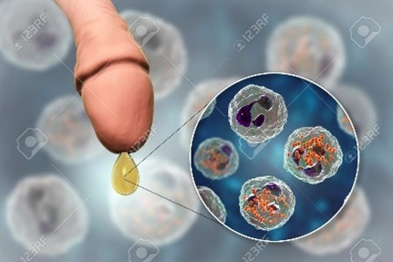
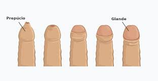

Mulheres
Vaginismo
O vaginismo é quando os músculos da vagina estão mais contraídos do que o normal,
podendo causar não só desconforto e dor durante o sexo como também a inserir tampões,
copo menstrual, entre outros métodos de contenção do fluxo menstrual. Existem dois tipos de vaginismo: o vaginismo primário consiste na presença de dor desde o início da vida sexual ou absorventes; já o secundário desenvolve-se após eventos traumáticos como por exemplo abuso sexual, parto, cirurgias, etc. Contudo felizmente é algo tratável e existem alguns tratamentos dos quais eu vou referir três ; a terapia cognitiva-comportamental resume-se em ajudar o paciente psicologicamente ,visando mudar a perspetiva do seu pensamento causador do medo e ansiedade nas relações sexuais ; dilatadores vaginais que tratam-se de um dispositivo com formato de tubo , por norma indicados pelo ginecologista , com o objetivo de ajudar a alargar os músculos vaginais , tornando-os mais flexíveis o que resulta num menor desconforto durante qualquer contacto intimo, deve ser utilizada uma pomada anestesia para facilitar o processo da inserção na vagina; exercícios de kegel que envolve treinamentos que contribuem para trabalhar a musculatura do assoalho pélvico e zona intima , o que provem a redução das contrações involuntárias dos músculos vaginais.

Corrimento
O corrimento vaginal é algo completamente normal e que por norma acontece todos os dias, sendo transparente ou um pouco esbranquiçado com uma textura pegajosa e elástica, contendo um cheiro normal (que não seja forte), este tem como objetivo limpar, humidificar e lubrificar a vagina, o que é estritamente necessário para o seu bom funcionamento. Contudo o corrimento também pode revelar o mau estar da vagina quando apresentar as seguintes características:
1.corrimento branco
Quando o corrimento está a sair branco e espesso que relembre leite estragado, acompanhado de comichão descontrolada, inchaço da vulva, vermelhidão, ardor e pode ter um cheiro forte ou não. Por norma estes sintomas tão associados ao fungo candidíase, mas não e preciso preocuparas te, é só uma infeção temporária que se pode tratar com um creme vaginal ou compridos que se inserem na vagina, ou mesmo antibióticos ou antifúngicos por via oral.
2.Corrimento transparente
Este tipo de corrimento é normal também, servindo para indicar que estás no período fértil do ciclo menstrual, sendo a altura perfeita para tentar engravidar. Por norma dura cerca de seis dias e após esse tempo desaparece. Contudo se este persistir pode significar um desequilíbrio hormonal.
3. corrimento cinzento
O corrimento cinza é normalmente indicativo da vaginose bacteriana, que acontece devido a um desequilíbrio da microbiota vaginal, resultando na diminuição da quantidade de lactobacilos, que são as bactérias boas, e aumento da concentração de outras bactérias que também fazem parte da microbiota, principalmente Gardnerella sp. Isto provoca corrimento com mau cheiro e aparecimento de outros sintomas como sensação de queimação ao urinar e coceira na vulva e na vagina.
Em relação ao tratamento é aconselhado a ida ao ginecologista, que recomendara uma pomada ou comprimidos de metronidazol
4.Corrimento amarelo
Quando o corrimento amarelo, que contem um cheiro forte d peixe e possível dor e sensação de queimação durante relações sexuais ou ao urinar. A sua causa principal é a infeção pelo protozoário trichomonas vaginalis , responsável pela tricomoníase, que é uma infeção sexualmente transmissível, se for esse o caso o corrimento terá mau cheiro acompanhado por dor e desconforto ao urinar e vermelhidão na região genital. Outra possível causa são infeções sexualmente transmissíveis. Como por exemplo clamídia ou gonorreia, que causam alem dos sintomas referidos, sangramento e dor durante a relação sexual, dor pélvica e sangramento fora do período.
O tratamento aconselhado depende do agente infecioso, mas por norma é indicado o uso de antibióticos como metronidazol , tioconazol ou secnidazol , na forma de comprimidos em dose única ou durante 5 a7 dias. Se tiver um parceiro sexual é aconselhado que este também faça o tratamento mesmo que não tenha sintomas.
5.Corrimento esverdeado
Esta cor de corrimento gera mau cheiro, comichão e ardor na região íntima. A sua causa pode variar entre tricimaniase , uma infeção sexualmente transmissível; vulvaginite, que é uma inflamação da vulva e vagina causada por microrganismos; ou vaginose bacteriana, contudo este tipo de corrimento é mais raro de acontecer neste caso.
6.Corrimento castanho
O corrimento marrom ou a presença de sangue no corrimento é geralmente sinal de alteração uterina, como cancro cervical, em que e o corrimento pode ser acompanhado por uma rápida perda de peso, dor e desconforto pélvico e sensação de pressão no fundo da barriga. O seu tratamento é orientado por uma ginecologista tendo em conta a causa e os sintomas, normalmente indicando a realização de cirurgia e/ou radioterapia, em alguns casos.
7 Corrimento rosado
Esta cor de corrimento, indica por norma o início da gravidez, pois é causado pela fecundação do óvulo e é frequente ocorrer até 3 dias depois do contacto íntimo. A acompanhar este corrimento é comum surgir leves cólicas abdominais e que passam sem necessidade de recorrer a tratamento. Para ter certeza de que este é o caso deve se fazer um teste de gravidez para confirmar, em caso de positivo realizar exame de sangue para ter 100% certeza. Sendo necessário também a visita a um ginecologista para que sejam dadas as orientações iniciais sobre a gestação.
Dicas de cuidado para evitar ter qualquer uma das infeções referidas acima:
• Ter uma boa higiene íntima, lavando a região uma vez por dia com um sabonete neutro sem cheiros ou sabonetes próprios para a região, não esfregando excessivamente.
• Mudar a roupa íntima diariamente (dando preferência a de algodão que permite que a região transpire adequadamente.
• Evitar o uso de roupas excessivamente apertadas na zona.
• Evitar o uso de toalhitas ou papel higiénico com perfume
• Usar preservativos sempre
• Tentar dormir sem cuecas para que a região possa arejar durante a noite
Preservativo feminino
O preservativo feminino é bastante semelhante ao preservativo masculino em relação à eficácia. Apesar do comprimento parecido é bastante mais largo, uma vez que serve para revestir as paredes da vagina. Tem um tamanho universal e tal como outros preservativos não pode ser utilizado mais do que uma vez. Pode este método contracetivo ser utilizado durante a menstruação, mas nunca alinhado a um preservativo masculino, pois seria criada uma fricção entre os dois o que poderia levar a romper os preservativos.
Passo a passo de como inserir um preservativo feminino:
• segurar o preservativo com a extremidade aberta voltada para baixo
• usar o polegar e o dedo médio para comprimir o anel flexível do lado fechado de forma a torná-lo num oval estreito
• com a outra mão, afaste os lábios da vulva
• introduzir a extremidade que tem o anel na vagina
• usar o dedo indicador para empurrar o anel o mais profundamente possível na vagina. Desta forma o preservativo fica quase todo introduzido na vagina
• inserir um dedo por dentro do preservativo até tocar a parte de baixo do anel
• empurrar o anel
• assegurar de que o anel externo e parte do preservativo estão fora da vagina e sobre a vulva
• verificar se o pénis penetra no interior do preservativo
• no final da relação sexual, torcer o anel externo e puxar delicadamente o preservativo para fora. Retirar logo após a ejaculação, para que não escorra o líquido seminal para dentro da vagina

Masturbação feminina
A masturbação feminina é a melhor maneira de se autoconhecer, algo bastante importante, mas pouco falado. O ato deveria ser do conhecimento e conforto de todas as mulheres em o fazerem. Pois não deve ser imposta essa “responsabilidade” ao parceiro ou parceira sexual. Não deve ser a masturbação motivo de pudor, uma vez que é com ela que se ganha mais confiança. Percebemos que existe um bloqueio em relação a fazê-lo, isso deve-se à falta de normalização do tema em relação às mulheres, já que nos homens é vista como “algo da idade” ou mesmo simplesmente normal.
A masturbação deve ser feita num local de conforto e calmo, dependendo da preferência da mulher pode ser feito no banho, no quarto, na sala entre outros. O que importa é não sentir pressionada a fazê-lo. Podemos ter preferência, na posição, no ambiente (mais claro ou escuro), se queremos utilizar brinquedos sexuais tudo deve ser adaptado ao gosto de cada uma. Todas as mulheres são diferentes por isso devem se autoconhecer para saberem o que lhes dá mais prazer. Existem pontos estratégicos que fazem com que a mulher atinga mais facilmente o orgasmo, como o mais conhecido clitóris, que deve ser explorado tanto pela mulher como pelo parceiro. Existem outros pontos como os seios, as orelhas, o pescoço, entre outros.

Aborto
O aborto ou nos termos mais corretos, a interrupção voluntária da gravidez, deve ser realizado até às 10 semanas de gravidez, que é calculado a partir da última menstruação e confirmado após uma ecografia. É este procedimento realizado em centros de saúde e só pode solicitado pela mulher. O método começa por uma consulta inicial, onde é explicado o processo de interrupção voluntária da gravidez, é realizada uma ecografia para garantir que está grávida. Depois de acordo com a lei são dados pelo menos 3 dias de reflexão para a certeza da escolha do método. Na segunda consulta é iniciado a procedimento que pode ser realizado com a toma de medicamentos ou com uma cirurgia de aspiração, os dois métodos são muito seguros e eficazes. O método medicamentoso começa por se tomar um medicamento que não fará efeitos, sendo assim possível fazer a vida normal. Após 24 horas, já em casa, serão tomados quatro comprimidos, que podem ter de serem inseridos na vagina ou tomados via oral. De seguida maioria das mulheres, 2 a 4 horas apos a toma, iriam apresentar perdas de sangue. O método cirúrgico será realizado por aspiração, sob anestesia loco regional ou sedação. Por vezes a mulher pode necessitar de ser internada por algumas horas a 1 dia. Por fim, é feita uma terceira consulta cerca de 15 dias depois da toma da medicação tem uma nova consulta para realizar uma ecografia e avaliar a realização de todo o processo.
Período menstrual
Com que idade surge?
A menstruação é algo que irá surgir todos os meses ao longo da vida da mulher, menos quando esta tiver grávida ou entrar na menopausa. O período começa durante a puberdade na adolescência, contudo não existe uma idade especifica para este aparecer podendo variar entre os 10 anos e os 14 não excluindo que pode aparecer mais cedo ou mais tarde é totalmente normal.
Quantos dias é suposto durar?
O sangramento menstrual por norma dura entre quatro a oito dias, sendo o fluxo fraco de início, no meio mais intensivo (podendo surgir coágulos de sangue, que tem a aparência de uma “bolinha” de sangue mais escura) e perto do fim fraco de novo podendo até ser um pouco acastanhado.
Quais são os diferentes tipos de absorventes?
1. penso diário
Os pensos diários é um absorvente de tamanho menor, mais fino que não tem tanta capacidade de absorção, sem abas, sendo aconselhado utilizá-lo só nos primeiros dias ou últimos, quando o fluxo está fraco.
2.Pensos higiénicos
Estes pensos já podem vir em diferentes tamanhos e por norma são mais grossos, com mais capacidade de absorção e por serem maiores vem com abas para facilitar utilização. Inclusive existem pensos higiénicos noturnos são mais longos e ainda mais grossos para suportar o fluxo durante a noite em dias de fluxo intenso. Qualquer tipo de penso é aconselhado a ser trocado de quatro em quatro horas, mas no caso dos noturnos podem ser utilizados até 10 horas.
3.Tampões
Este tipo de absorventes é ideal para mulheres que não gostam de sentir o penso ou sentem incomodo, para além disso é uma das soluções para se poder ir à praia, piscina ou fazer exercício. Este absorvente também tem diferentes níveis de absorção podendo utilizar os de maior absorção nos dias de mais fluxo e os de menos absorção em dias de menos fluxo.
4.Copo menstrual
Os copos menstruais são uma alternativa para os tampões, mas sem poluir o ambiente por ser reutilizável tendo uma duração de 10 anos. Normalmente estes produtos podem ser feitos de silicone medicinal ou de uma espécie de borracha utilizada na produção de material cirúrgico, o que faz com que sejam maleáveis para facilitar a inserção e hipoalérgicos. Podendo haver diferentes tamanhos para as diferentes necessidades de cada mulher. Para facilitar a inserção deves sentar te na sanita com os joelhos afastados, dobrar o coletor em forma de “C”e inserir ,logo a seguir verificar que este esta bem encaixado e sem dobras, a posição correta dos coletores não e mais para fundo do canal vaginal como os tampões, mas mais perto da entrada.
5.CUECAS absorventes
As cuecas absorventes são outra ótima opção para quem se preocupa com o meio ambiente, pois são reutilizáveis bastando lava las. A sua aparência é normal, no entanto possuem a capacidade de absorver a menstruação e secar rapidamente, sendo mais aconselhado a mulheres que não tenham um fluxo muito intenso. A sua utilização é uma por dia, no entanto em dias de mais fluxo deve se trocar de 5 a 8 horas.
6.Pensos de tecido
De novo este tipo de absorvente é também uma opção muito mais ecológica a sustentável feito de tecido 100% de algodão, podendo ser utilizada como um absorvente comum ou em conjunto com o copo menstrual por exemplo.
7.Disco menstrual
Este dispositivo permite coletar o sangue por até 12 horas, e é feito de um material flexível, o que o torna reutilizável ou descartável. Este tem o formato de uma concha e pode ser usado em dias de fluxo mais intenso, pois tem uma maior capacidade do que o copo menstrual. Para colocar o disco menstrual, a mulher pode estar sentada, em pé ou agachada como preferir e deve dobrar as bordas do disco formando um 8 e introduzir na vagina de maneira a ficar o mais fundo possível, passando de seguida o dedo pelas bordas do disco certificando se de que este esta colocado corretamente.

Relações sexuais
Benefícios do sexo
O sexo é mais do que um prazer da vida, é muito importante ter uma vida sexualmente ativa uma vez que é possível trazer saúde, bem-estar físico e mental. A liberação de endorfinas e a sensação de bem-estar durante o sexo não apenas melhora o humor, mas também pode ajudar a aliviar a dor, seja ela relacionada a dores de cabeça, cólicas menstruais ou outras fontes de desconforto. O sexo também é uma forma de atividade que pode contribuir para a saúde do coração, ajudando a melhorar a circulação sanguínea, reduzir a pressão arterial e diminuir o risco de doenças cardiovasculares. O orgasmo pode promover o relaxamento, ajudando a induzir o sono. Além disso, o sexo contribui para a regulação dos hormônios do sono, como a melatonina, o que pode resultar em noites melhores. A atividade sexual envolve o uso de vários grupos musculares e pode ser considerada uma forma de exercício. Além disso, o sexo regular pode contribuir para a flexibilidade e resistência muscular de várias áreas do corpo, especialmente o assoalho pélvico. Por isso manter uma vida sexualmente ativa, para além de algo extremamente necessário entre casal, é também algo necessário para a nossa saúde individual.
Sexo sem limites
Será que existe um número mínimo ou máximo que devemos ter de parceiros sexuais?
Esta questão é algo que pode mudar de perspetiva para perspetiva, contudo eu acho que devia ser de opinião geral que a decisão de alguém em partilhar o seu corpo com múltiplos parceiros, não lhe retira nenhum valor, não esquecendo que no fundo isto é uma decisão que cabe a cada um de nós fazer, e muito menos deveríamos nos incomodar ou meter rótulos em pessoas que tem este ideal. Sendo assim não nos compete a nenhum de nós ditar o que é correto ou não na vida dos outros e por essa razão vamos simplesmente referir alguns cuidados e conselhos que se deve ter ao se relacionar sexualmente com diversas pessoas.
1. Usar sempre proteção não só para te protegeres a ti como as pessoas que te relacionas.
2. Ser honesto/a e comunicar. Às pessoas que te irás relacionar que tens múltiplos parceiros sexuais logo corres mais risco de conter uma doença sexual pois não existe nenhum método que seja 100% seguro.
3. Garantir que o fazes porque o queres e não por influências ou por procurares uma distração.
4. Ter cuidado com quem decides te relacionar, evitar ter relações sexuais com desconhecidos muito menos ir a casa de alguém que não conheças principalmente as mulheres, pois nuca se sabe a intenção da outra pessoa e cuidado nunca é demais.
5. Não permitir que se torne um vicio, pois causará um impacto negativo não só mentalmente, mas também fisicamente.

Doenças sexualmente transmissíveis (DST)
As infeções sexualmente transmissíveis (IST) são doenças transmitidas principalmente por sexo vaginal, anal ou oral, podendo também ser transmitidas por contato com sangue infetado, durante a gravidez, o parto ou a amamentação. Muitas IST não apresentam sintomas nas fases iniciais, o que aumenta o risco de transmissão. Quando ocorrem, os sintomas mais comuns incluem corrimento vaginal ou peniano, úlceras genitais e dor na região pélvica. Alguns IST podem levar à infertilidade.
Existem mais de 30 agentes patogénicos responsáveis pelo IST, incluindo bactérias (clamídia, gonorreia, sífilis), vírus (herpes genital, VIH/SIDA, vírus do papiloma humano – VPH) e parasitas (tricomoníase). Enquanto alguns são curáveis, como sífilis, gonorreia, clamídia e tricomoníase, outros, como herpes, hepatite B, VIH/SIDA e VPH, não têm cura, mas podem ser tratados para controlar os sintomas. O aumento da resistência antibiótica, especialmente na gonorreia, é uma preocupação crescente.
A prevenção passa pela abstinência sexual, sexo seguro (uso de preservativos, número limitado de parceiros, monogamia mútua), vacinação (hepatite B e HPV) e, em alguns casos, circuncisão masculina. O acesso a exames de diagnóstico e tratamento varia entre países desenvolvidos e em desenvolvimento, influenciando o controle da disseminação do IST.
.png)
Não é não
Maior parte das pessoas não entende que um “não” por vezes não é só referir a palavra, sendo assim nos vamos dizer alguns exemplos em que o parceiro deve recuar, se se depara com tal, e em que situações deixa de ser sexo e torna-se em algo abusivo.
Se a pessoa não responder ou disser não sei é um não, alguém que quer realmente ter relações mesmo sendo tímida/o não terá esta reação, por isso se o teu parceiro fizer alguma destas opções deves recuar. Se a pessoa referir que está a incomodar ou doer deves parar e garantir que está a ser uma experiência prazerosa para ambos e não só para ti, afinal o sexo é feito com duas pessoas. Se durante a relação sexual o homem se vier para dentro da mulher sem a sua permissão, isto é abusivo, o teu parceiro não tem o direito de decidir por ti o que fazer dentro do teu corpo. Se vires pelas expressões faciais que a pessoa não esta a sentir se bem deves também parar e não pensar só no teu prazer. Também é abusivo pressionar a pessoa a fazer algo que está não quer e muito menos pressionar para que façam relações sem preservativo por interesse próprio, pois no fundo é sempre melhor estarmos protegidos.

Gonorreia
A DST referida é inicialmente causada pela realização de sexo anal, ou seja, o pénis penetrar do ânus e apos isso existe penetração na vagina. Provocada pela bactéria Neisseria gonorrhoeae, é a principal causa de uretrite, isto é, inflamação da uretra – canal que drena a urina da bexiga. Desenvolve-se mais facilmente nas áreas quentes e húmidas do trato reprodutivo, incluindo o colo do útero, o útero, as trompas de Falópio e a uretra, mas também pode crescer na boca, garganta, olhos e ânus. A transmissão pode ser também feita entre mãe e filho durante o parto. Pode ser transmitida mesmo que a pessoa infetada não apresente sintomas. Nas mulheres, os sintomas são menos óbvios, o que pode trazer problemas acrescidos, já que podem procurar tratamento médico, num estado mais avançado da doença. O período de incubação varia entre 2 e 8 dias. O principal sintoma da doença é a uretrite, que se caracteriza por um corrimento mucoso e esverdeado que pode ser acompanhado por um ardor ao urinar e algo comichão. A gonorreia pode ser totalmente curada, desde que seja diagnosticada corretamente e tratada. O tratamento é efetuado com recurso a antibióticos. Porém, quando não tratada, a gonorreia pode levar a complicações como infertilidade e, nas mulheres, provocar uma doença inflamatória chamada de doença inflamatória pélvica, que pode ser muito grave.

Ejaculação feminina
Infelizmente muitos homens não tem conhecimento de que as mulheres quando tem um orgasmo também liberam um líquido pela vagina, no entanto ao contrário dos homens a nossa ejaculação simplesmente escorre e não sai com pressão.

Homens
Fimose
O que é?
A fimose consiste no facto de a cabeça do pénis estar permanentemente cobrida com a pele que o rodeia, sendo incapaz de a mover como usualmente se deve.
Possíveis sintomas?
Em grande parte dos casos a sua única manifestação é a dificuldade na retração da pele, no entanto pode ocorrer infeções da glande ou urinarias, ereções dolorosas e podendo também doer durante as relações.
Quais as suas causas?
Por norma a fimose é algo que surge em bebes e meninos pequenos, contudo em homens mais velhos pode ser causada por infeções, irritações.
Qual o tratamento?
Nos casos não complicados, pode ser realizada por volta dos sete a 10 anos de idade, pois até então pode ocorrer o descolamento normal da pele evitando-se assim a cirurgia. Nessa idade, a criança já consegue entender a necessidade da operação, tornando-a menos traumatizante por outro lado, é importante que ocorra antes da adolescência, altura em que as ereções mais frequentes tornam o pós-operatório mais doloroso e aumentam o risco de complicações.
A cirurgia é realizada em ambulatório e, na infância e mesmo na adolescência, prefere-se a anestesia geral, geralmente precedida pelo uso de um sedativo e de um analgésico, para evitar que o paciente assista, a técnica remove se a pele, mas a quantidade a remover depende da idade e do grau de fimose.

Cheiros de sémen
É importante estar atento aos sinais que o nosso corpo nos dá. O grande sinal é o cheiro, que pode ser variado, mas essa variação é causada por algo. Se o cheiro se assemelha a peixe, pode ser causada pelas bactérias Chlamydia Trachomatis (clamídia) ou Neisseria gonorrhoeae (gonorreia). O segundo cheiro alarmante é o cheiro doce ou frutado, que pode ser causado pode excesso de açúcar no sangue. O terceiro cheiro que se deve ter conhecimento é o cheiro extremamente forte e químico, que pode causado pelo alto consumo de drogas e álcool. Por fim, o cheiro normal do sémen, pode ser semelhante ao cheiro da lixivia ou mesmo estar ausente de cheiros. Todos os cheiros devem ser do conhecimento de todos, e qualquer mudança deve chamar a atenção, e se necessário dirigir-se ao médico.

Cuidados com os preservativos masculinos
Os preservativos masculinos estão sujeitos a condições necessárias para que a sua eficácia se mantenha. Os homens sevem os manter em locais frescos, longe do sol e fora de condições de mudanças constantes climatéricas. O cuidado em abrir a embalagem que envolve o preservativo também deve ser um favor de atenção. É importante confirmar: o estado de conservação da embalagem; o certificado de qualidade; o prazo de validade. Os preservativos masculinos podem se comprar nos supermercados ou nas farmácias. Pode ainda obtê-los gratuitos nos centros de saúde e em algumas organizações governamentais. As vantagens no uso do preservativo masculina são várias, mas destacam-se: é o único método contracetivo que evita as infeções sexualmente transmissíveis; é um método barato e de fácil acesso; é um método de fácil utilização; não necessita de supervisão médica. É necessário saber retirá-lo após a utilização. Após o uso é necessário fazer um nó para que possa apertar e perceber se está furado ou não.

Masturbação masculina
A masturbação masculina também tem os seus benefícios, como os que podemos citar:
• Fortalecimento da musculatura do assoalho pélvico (assim como qualquer atividade sexual), prevenindo impotência sexual e incontinência urinária;
• Previne o cancro da próstata, inclusive estudos indicam que o aumento no número de ejaculações está associado ao menor risco de desenvolver esse tipo de cancro;
• Ajuda na melhoria do humor, pois o orgasmo provocado estimula a produção de neurotransmissores que geram bem-estar, como a serotonina;
• Pode aumentar a produção de anticorpos e turbinar a imunidade;
Todavia, como qualquer ação que traz prazer, a masturbação masculina pode se tornar um vício prejudicial para a vida social e familiar dos homens. Por isso, é importante que possamos combater o tabu e falar abertamente sobre o tema a fim de garantir que esta prática natural seja também saudável.

Problemas da pornografia
descricao

Pré-ejaculação
O líquido pré-ejaculatório, em termos mais científicos, é um fluido lubrificante libertado do pénis durante a excitação sexual. Embora o próprio fluido pré-ejaculatório não contenha espermatozoides, existe a possibilidade de entrar em contacto com espermatozoides. O método de coito interrompido, ou coitus interruptus, é quando um homem tira o pénis da vagina antes de ejacular. A ideia é que assim os espermatozoides não vão alcançar o óvulo da parceira, pelo que este método é utilizado como uma forma de contraceção.